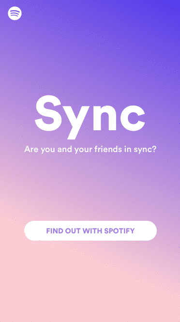
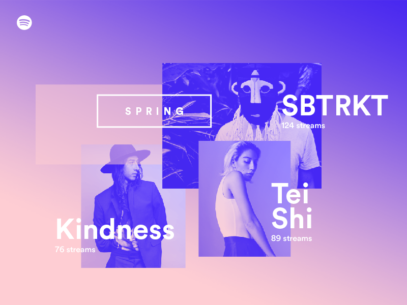
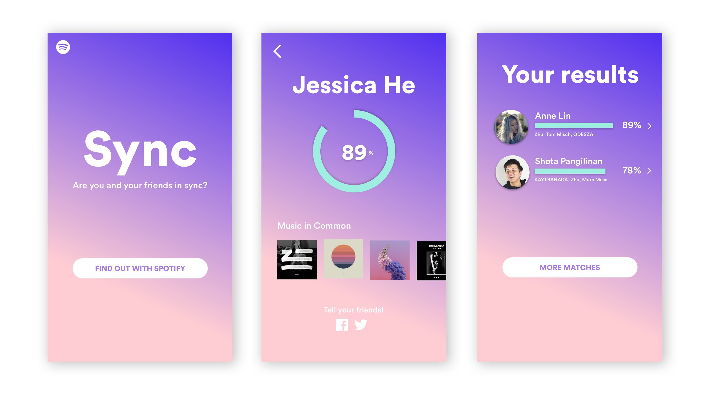
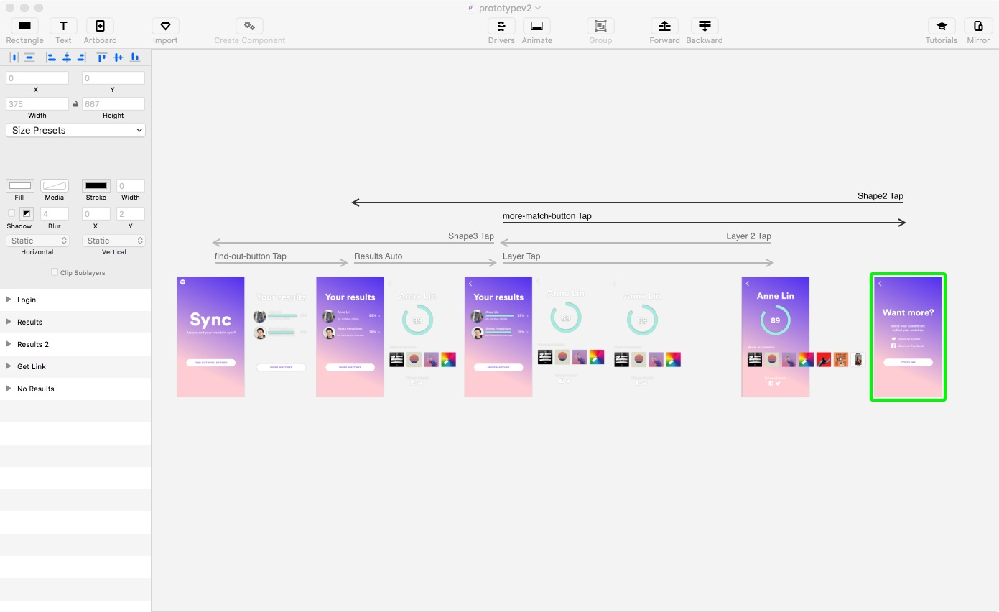

Sync
UI/UX
Spring 2016
Principle, Sketch
LA Hacks
Sync utilizes Spotify's API to assign music compatibility scores among friends. What started as a project for
LA Hacks, continued to be a personal project of mine as I wanted to learn how to prototype with
Principle.

A prototype of Sync built with Principle.
Goals
I wanted Sync to feel as if it were part of Spotify's suite of products and took inspiration from Spotify's 2015 'Year in Music' website, which utilized big, bold, white text on colorful gradients.

A screenshot of Spotify's 'Year in Music' site.

Mockups of Sync built with Sketch.
This project also allowed me to get my feet wet in prototyping with Principle, which I really enjoyed!

My Principle workspace.
The project my team built during the hackathon can be found on Github here.